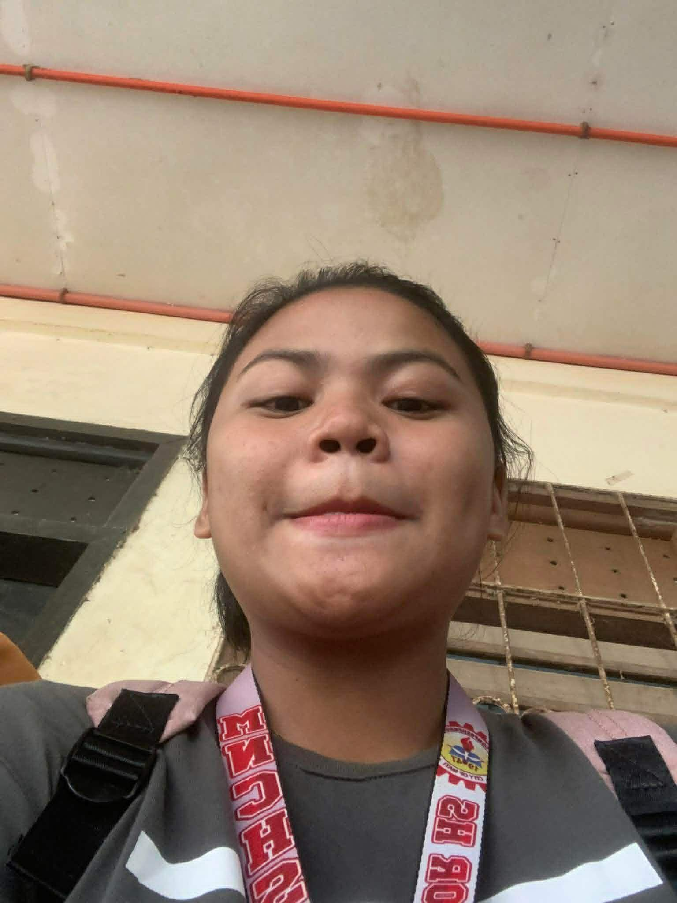
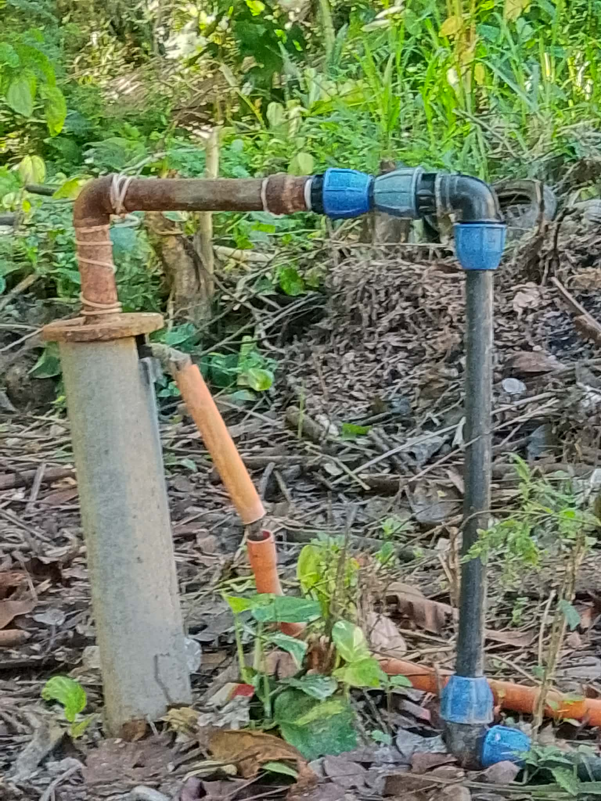

Grade 12 ICT Student | Future Web Developer

Hello! My name is Krizel Mae R. Maynagcot. I am a Grade 12 ICT student who enjoys programming, web design, graphic design, and creating digital projects.
Favorite Color: Blue
Favorite Food: Adobo
Dream Job: Criminologist

This reminds me of the importance of water in our daily lives. Water is essential for survival and many communities depend on simple technologies such as water pumps.
Many communities still use pumps every day to collect clean water for drinking, cooking, and other household needs.
This picture highlights the connection between people and nature, showing how resources should be used responsibly.
Welcome to my personal portfolio website.
Creating posters, logos, and digital artwork.
Building attractive and responsive websites.
Learning programming and software development.
Developing useful applications and projects.